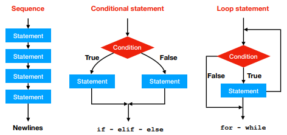
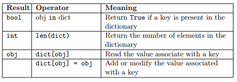
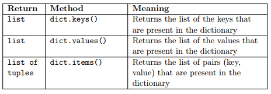

Module 1, Practical 5¶
In this practical we will add some information on loops and introduce dictionaries.
More on loops¶
As seen in the previous practical and in the lecture, there are three different ways of execution flow:
We have already seen the if, for and while loops and their variants. Please remember that the code block of each of these statements is defined by the indentation (i.e. spacing).
Ternary operator¶
In some cases it is handy to be able to initialize a variable depending on the value of another one.
Example: The discount rate applied to a purchase depends on the amount of the sale. Create a variable discount setting its value to 0 if the variable amount is lower than 100 euros, to 10% if it is higher.
[1]:
amount = 110
discount = 0
if amount >100:
discount = 0.1
else:
discount = 0 # not necessary
print("Total amount:", amount, "discount:", discount)
Total amount: 110 discount: 0.1
The previous code can be written more coincisely as:
[2]:
amount = 110
discount = 0.1 if amount > 100 else 0
print("Total amount:", amount, "discount:", discount)
Total amount: 110 discount: 0.1
The basic syntax of the ternary operator is:
variable = value if condition else other_value
meaning that the variable is initialized to value if the condition holds, otherwise to other_value.
Python also allows in line operations separated by a “;”. This is a compact way of specifying several instructions on a single line, but it makes the code more difficult to read.
[3]:
a = 10; b = a + 1; c = b +2
print(a,b,c)
10 11 13
Note: Although the ternary operator and in line operations are sometimes useful and less verbose than the explicit definition, they are considered “non-pythonic” and advised against.
Break and continue¶
Sometimes it is useful to skip an entire iteration of a loop or end the loop before its supposed end. This can be achieved with two different statements: continue and break.
Continue statement¶
Within a for or while loop, continue makes the interpreter skip that iteration and move on to the next.
Example: Print all the odd numbers from 1 to 20.
[4]:
#Two equivalent ways
#1. Testing remainder == 1
for i in range(21):
if i % 2 == 1:
print(i, end = " ")
print("")
#2. Skipping if remainder == 0 in for
for i in range(21):
if i % 2 == 0:
continue
print(i, end = " ")
1 3 5 7 9 11 13 15 17 19
1 3 5 7 9 11 13 15 17 19
Continue can be used also within while loops but we need to be careful to update the value of the variable before reaching the continue statement or we will get stuck in never-ending loops. Example: Print all the odd numbers from 1 to 20.
[5]:
#Wrong code:
i = 0
while i < 21:
if i % 2 == 0:
continue
print(i, end = " ")
i = i + 1 # NEVER EXECUTED IF i % 2 == 0!!!!
---------------------------------------------------------------------------
KeyboardInterrupt Traceback (most recent call last)
Input In [5], in <cell line: 3>()
1 #Wrong code:
2 i = 0
----> 3 while i < 21:
4 if i % 2 == 0:
5 continue
KeyboardInterrupt:
a possible correct solution using while:
[6]:
i = -1
while i< 20: #i is incremented in the loop, so 20!!!
i = i + 1 #the variable is updated no matter what
if i % 2 == 0:
continue
print(i, end = " ")
1 3 5 7 9 11 13 15 17 19
Break statement¶
Within a for or while loop, break makes the interpreter exit the loop and continue with the sequential execution. Sometimes it is useful to get out of the loop if to complete our task we do not need to get to the end of it.
Example: Given the following list of integers [1,5,6,4,7,1,2,3,7] print them until a number already printed is found.
[7]:
L = [1,5,6,4,7,1,2,3,7]
found = []
for i in L:
if i in found:
break
found.append(i)
print(i, end = " ")
1 5 6 4 7
Example: Pick a random number from 1 and 50 and count how many times it takes to randomly choose number 27. Limit the number of random picks to 40 (i.e. if more than 40 picks have been done and 27 has not been found exit anyway with a message).
[8]:
import random
iterations = 1
picks = []
while iterations <= 40:
pick = random.randint(1,50)
picks.append(pick)
if pick == 27:
break
iterations += 1 #equal to: iterations = iterations + 1
if iterations == 41:
print("Sorry number 27 was never found!")
else:
print("27 found in ", iterations, "iterations")
print(picks)
Sorry number 27 was never found!
[17, 49, 50, 42, 42, 23, 24, 40, 1, 13, 12, 22, 14, 41, 30, 33, 11, 43, 17, 20, 16, 15, 31, 32, 23, 45, 8, 20, 50, 13, 44, 23, 2, 8, 4, 11, 32, 28, 17, 49]
An alternative way without using the break statement makes use of a flag variable (that when changes value will make the loop end):
[8]:
import random
found = False # This is called flag
iterations = 1
picks = []
while iterations <= 40 and found == False: #the flag is used to exit
pick = random.randint(1,50)
picks.append(pick)
if pick == 27:
found = True #update the flag, will exit at next iteration
iterations += 1
if iterations == 41 and not found:
print("Sorry number 27 was never found!")
else:
print("27 found in ", iterations -1, "iterations")
print(picks)
Sorry number 27 was never found!
[14, 32, 28, 25, 49, 28, 31, 6, 11, 17, 21, 13, 35, 15, 3, 30, 34, 19, 38, 20, 47, 38, 14, 42, 32, 19, 23, 49, 40, 21, 17, 35, 47, 1, 39, 41, 31, 33, 21, 35]
List comprehension¶
List comprehension is a quick way of creating a list. The resulting list is normally obtained by applying a function or a method to the elements of another list that remains unchanged.
The basic syntax is:
new_list = [ some_function (x) for x in start_list]
or
new_list = [ x.some_method() for x in start_list]
List comprehension can also be used to filter elements of a list and produce another list as sublist of the first one (remember that the original list is not changed).
In this case the syntax is:
new_list = [ some_function (x) for x in start_list if condition]
or
new_list = [ x.some_method() for x in start_list if condition]
where the element x in start_list becomes part of new_list if and only if the condition holds True.
Let’s see some examples:
Example: Given a list of strings [“hi”, “there”, “from”, “python”] create a list with the length of the corresponding element (i.e. the one with the same index).
[9]:
elems = ["hi", "there", "from", "python"]
newList = [len(x) for x in elems]
for i in range(0,len(elems)):
print(elems[i], " has length ", newList[i])
hi has length 2
there has length 5
from has length 4
python has length 6
Example: Given a list of strings [“dog”, “cat”, “rabbit”, “guinea pig”, “hamster”, “canary”, “goldfish”] create a list with the elements starting with a “c” or “g”.
[10]:
pets = ["dog", "cat", "rabbit", "guinea pig", "hamster", "canary", "goldfish"]
cg_pets = [x for x in pets if x.startswith("c") or x.startswith("g")]
print("Original:")
print(pets)
print("Filtered:")
print(cg_pets)
Original:
['dog', 'cat', 'rabbit', 'guinea pig', 'hamster', 'canary', 'goldfish']
Filtered:
['cat', 'guinea pig', 'canary', 'goldfish']
Example: Create a list with all the numbers divisible by 17 from 1 to 200.
[11]:
values = [ x for x in range(1,200) if x % 17 == 0]
print(values)
[17, 34, 51, 68, 85, 102, 119, 136, 153, 170, 187]
Example: Transpose the matrix \(\begin{bmatrix}1 & 10\\2 & 20\\3 & 30\\4 & 40\end{bmatrix}\) stored as a list of lists (i.e. matrix = [[1, 10], [2,20], [3,30], [4,40]]). The output matrix should be: \(\begin{bmatrix}1 & 2 & 3 & 4\\10 & 20 & 30 & 40\end{bmatrix}\), represented as [[1, 2, 3, 4], [10, 20, 30, 40]]
[12]:
matrix = [[1, 10], [2,20], [3,30], [4,40]]
print(matrix)
transpose = [[row[i] for row in matrix] for i in range(2)]
print (transpose)
[[1, 10], [2, 20], [3, 30], [4, 40]]
[[1, 2, 3, 4], [10, 20, 30, 40]]
Example: Given the list: [“Hotel”, “Icon”,” Bus”,”Train”, “Hotel”, “Eye”, “Rain”, “Elephant”] create a list with all the first letters.
[13]:
myList = ["Hotel", "Icon"," Bus","Train", "Hotel", "Eye", "Rain", "Elephant"]
initials = [x[0] for x in myList]
print(myList)
print(initials)
print("".join(initials))
['Hotel', 'Icon', ' Bus', 'Train', 'Hotel', 'Eye', 'Rain', 'Elephant']
['H', 'I', ' ', 'T', 'H', 'E', 'R', 'E']
HI THERE
With list comprehension we can copy a list into another one, but this is a shallow copy:
[10]:
a = [1,2,3]
b = [a, [[a]]]
print("B:", b)
c = [x for x in b]
print("C:", c)
a.append(4)
print("B now:" , b)
print("C now:", c)
B: [[1, 2, 3], [[[1, 2, 3]]]]
C: [[1, 2, 3], [[[1, 2, 3]]]]
B now: [[1, 2, 3, 4], [[[1, 2, 3, 4]]]]
C now: [[1, 2, 3, 4], [[[1, 2, 3, 4]]]]
Dictionaries¶
A dictionary is a map between one object, the key, and another object, the value. Dictionaries are mutable objects and contain sequences of mappings key –> object but there is not specific ordering among them. Dictionaries are defined using the curly braces {key1 : value1, key2 : value2} and : to separate keys from values.
Some examples on how to define dictionaries follow:
[14]:
first_dict = {"one" : 1, "two": 2, "three" : 3, "four" : 4}
print("First:", first_dict)
empty_dict = dict()
print("Empty:",empty_dict)
second_dict = {1 : "one", 2 : "two", "three" :3 } #BAD IDEA BUT POSSIBLE!!!
print(second_dict)
third_dict = dict(zip(["one","two","three","four"],[1,2,3,4]))
print(third_dict)
print(first_dict == third_dict)
First: {'one': 1, 'two': 2, 'three': 3, 'four': 4}
Empty: {}
{1: 'one', 2: 'two', 'three': 3}
{'one': 1, 'two': 2, 'three': 3, 'four': 4}
True
Note that there is no ordering of the keys, and that the order in which they have been inserted is not preserved. Moreover, keys and values can be dishomogeneous (e.g. keys can be strings and values integers). An interesting case is third_dict where the function zip followed by dict is used to map the keys of the first list into the values present in the second.
Note that keys can be dishomogeneous, even though this is a bad idea normally. The only requirement for the keys is that they must be immutable objects. Trying to use a mutable object as a key will make the interpreter crash with the error: unhashable type. Finally, keys must be unique. We cannot associate more than one value to the same key.
[15]:
a = (1,2,3) #a,b are tuples: hence immutable
b = (1,3,5)
my_dict = {a : 6, b : 9 }
print(my_dict)
c = [1,2,3] #c,d are lists: hence mutable
d = [1,3,5]
dict2 = {c : 6, d : 9}
print(dict2)
{(1, 2, 3): 6, (1, 3, 5): 9}
---------------------------------------------------------------------------
TypeError Traceback (most recent call last)
<ipython-input-15-0fe98c7f5acd> in <module>
8 d = [1,3,5]
9
---> 10 dict2 = {c : 6, d : 9}
11 print(dict2)
TypeError: unhashable type: 'list'
Functions working on dictionaries¶
As for the other data types, python provides several operators that can be applied to dictionaries. The following operators are available and they basically work as in lists. The only exception being that the operator in checks whether the specified object is present among the keys.
Some usage examples follow:
[16]:
myDict = {"one" : 1, "two" : 2, "twentyfive" : 25}
print(myDict)
myDict["ten"] = 10
myDict["twenty"] = 20
print(myDict)
myDict["ten"] = "10-again"
print(myDict)
print("The dictionary has ", len(myDict), " elements")
print("The value of \"ten\" is:", myDict["ten"])
print("The value of \"two\" is:", myDict["two"])
print("Is \"twentyfive\" in dictionary?", "twentyfive" in myDict)
print("Is \"seven\" in dictionary?", "seven" in myDict)
{'one': 1, 'two': 2, 'twentyfive': 25}
{'one': 1, 'two': 2, 'twentyfive': 25, 'ten': 10, 'twenty': 20}
{'one': 1, 'two': 2, 'twentyfive': 25, 'ten': '10-again', 'twenty': 20}
The dictionary has 5 elements
The value of "ten" is: 10-again
The value of "two" is: 2
Is "twentyfive" in dictionary? True
Is "seven" in dictionary? False
Dictionary methods¶
Recall what seen in the lecture, the following methods are available for dictionaries:
These methods are new to dictionaries and can be used to loop through the elements in them.
ERRATUM: dict.keys() returns a dict_keys object not a list. To cast it to list, we need to call list(dict.keys()). The same applies to dict.values() that returns a dict_values object that needs conversion to a list with list(dict.values()).
[17]:
D = {"k1" : 1, "k2" : 2 , "k3" : 3}
print("keys:" , D.keys(), "values:", D.values())
print("")
print("keys:", list(D.keys()), "values:", list(D.values()))
keys: dict_keys(['k1', 'k2', 'k3']) values: dict_values([1, 2, 3])
keys: ['k1', 'k2', 'k3'] values: [1, 2, 3]
Let s try Given the sequence below, store in a dictionary all the characters and count how many times they appear. Finally print out the stats (e.g. how many amino-acids are present, the most frequent, the least frequent and the frequency of all of them in alphabetical order).
>sp|P00517|KAPCA_BOVIN cAMP-dependent protein kinase catalytic subunit alpha
MGNAAAAKKGSEQESVKEFLAKAKEDFLKKWENPAQNTAHLDQFERIKTLGTGSFGRVML
VKHMETGNHYAMKILDKQKVVKLKQIEHTLNEKRILQAVNFPFLVKLEFSFKDNSNLYMV
MEYVPGGEMFSHLRRIGRFSEPHARFYAAQIVLTFEYLHSLDLIYRDLKPENLLIDQQGY
IQVTDFGFAKRVKGRTWTLCGTPEYLAPEIILSKGYNKAVDWWALGVLIYEMAAGYPPFF
ADQPIQIYEKIVSGKVRFPSHFSSDLKDLLRNLLQVDLTKRFGNLKNGVNDIKNHKWFAT
TDWIAIYQRKVEAPFIPKFKGPGDTSNFDDYEEEEIRVSINEKCGKEFSEF
[1]:
protein = """MGNAAAAKKGSEQESVKEFLAKAKEDFLKKWENPAQNTAHLDQFERIKTLGTGSFGRVML
VKHMETGNHYAMKILDKQKVVKLKQIEHTLNEKRILQAVNFPFLVKLEFSFKDNSNLYMV
MEYVPGGEMFSHLRRIGRFSEPHARFYAAQIVLTFEYLHSLDLIYRDLKPENLLIDQQGY
IQVTDFGFAKRVKGRTWTLCGTPEYLAPEIILSKGYNKAVDWWALGVLIYEMAAGYPPFF
ADQPIQIYEKIVSGKVRFPSHFSSDLKDLLRNLLQVDLTKRFGNLKNGVNDIKNHKWFAT
TDWIAIYQRKVEAPFIPKFKGPGDTSNFDDYEEEEIRVSINEKCGKEFSEF"""
protein = protein.replace("\n","")
print(protein)
amino_acids = dict()
for a in protein:
if a in amino_acids:
amino_acids[a] = amino_acids[a] + 1 # amino_acids[a] += 1
else:
amino_acids[a] = 1
num_aminos = len(amino_acids)
print("The number of amino-acids present is ", num_aminos)
#let's get all aminoacids
#and sort them alphabetically
a_keys = list(amino_acids.keys())
a_keys.sort()
# Another example of dictionaries
mostF = {"frequency" : -1, "aminoacid" : "-"}
leastF = {"frequency" : len(protein), "aminoacid" : "-"}
for a in a_keys:
freq = amino_acids[a]
if(mostF["frequency"] < freq):
mostF["frequency"] = freq
mostF["aminoacid"] = a
if(leastF["frequency"] > freq):
leastF["frequency"] = freq
leastF["aminoacid"] = a
print(a, " is present", freq, "times")
print("Amino", leastF["aminoacid"], "has the lowest freq. (",leastF["frequency"],")")
print("Amino", mostF["aminoacid"], "has the highest freq. (",mostF["frequency"],")")
MGNAAAAKKGSEQESVKEFLAKAKEDFLKKWENPAQNTAHLDQFERIKTLGTGSFGRVMLVKHMETGNHYAMKILDKQKVVKLKQIEHTLNEKRILQAVNFPFLVKLEFSFKDNSNLYMVMEYVPGGEMFSHLRRIGRFSEPHARFYAAQIVLTFEYLHSLDLIYRDLKPENLLIDQQGYIQVTDFGFAKRVKGRTWTLCGTPEYLAPEIILSKGYNKAVDWWALGVLIYEMAAGYPPFFADQPIQIYEKIVSGKVRFPSHFSSDLKDLLRNLLQVDLTKRFGNLKNGVNDIKNHKWFATTDWIAIYQRKVEAPFIPKFKGPGDTSNFDDYEEEEIRVSINEKCGKEFSEF
The number of amino-acids present is 20
A is present 23 times
C is present 2 times
D is present 18 times
E is present 27 times
F is present 25 times
G is present 22 times
H is present 9 times
I is present 21 times
K is present 34 times
L is present 32 times
M is present 8 times
N is present 17 times
P is present 14 times
Q is present 14 times
R is present 15 times
S is present 16 times
T is present 14 times
V is present 20 times
W is present 6 times
Y is present 14 times
Amino C has the lowest freq. ( 2 )
Amino K has the highest freq. ( 34 )
Important NOTE. Accessing a value through the key of a dictionary requires that the pair key-value one searches for is present in the dictionary. If the searched key is not present the interpreter crashes out throwing a KeyError as follows:
[2]:
myDict = {"one" : 1, "two" : 2, "three" : 3}
print(myDict["one"])
print(myDict["seven"])
1
---------------------------------------------------------------------------
KeyError Traceback (most recent call last)
Input In [2], in <cell line: 4>()
1 myDict = {"one" : 1, "two" : 2, "three" : 3}
3 print(myDict["one"])
----> 4 print(myDict["seven"])
KeyError: 'seven'
This could be avoided by checking that the key is present in the dictionary beforehand:
[3]:
myDict = {"one" : 1, "two" : 2, "three" : 3}
search_keys = ["one", "seven"]
for s in search_keys:
if s in myDict:
print("key:", s, "value:", myDict[s])
else:
print("key", s, "not found in dictionary")
key: one value: 1
key seven not found in dictionary
or by using the dictionary method get that has two inputs: the key and a default value to return in case key is not present in the dictionary:
[21]:
myDict = {"one" : 1, "two" : 2, "three" : 3}
search_keys = ["one", "seven"]
for s in search_keys:
print("key:", s, "value:", myDict.get(s, "not found"))
key: one value: 1
key: seven value: not found
Exercises¶
Given the following two lists of integers: [1, 13, 22, 7, 43, 81, 77, 12, 15,21, 84,100] and [44,32,7, 100, 81, 13, 1, 21, 71]:
Sort the two lists
Create a third list as intersection of the two lists (i.e. an element is in the intersection if it is present in both lists).
Print the three lists.
Show/Hide Solution
given the following text:
Count how many times each word appear (use a dictionary)
how many “di” appears?
put in a dictionary all the indexes of the occurrences of the following three characters: è, d, i (i.e. the key of the dictionary is the sequence and the value is the list of all positions at which the four-mers appear).
text = """Sono in tutto quattro, affidate a personaggi molto diversi tra loro e riguardanti aspetti diversi
della vicenda biografica di Dante; come anche quelle del Purgatorio, hanno in comune il carattere poco chiaro
e oscuro, che renderà necessaria la chiosa di Cacciaguida nel Canto XVII del Paradiso.
La prima è quella di Ciacco (VI), che risponde alle domande di Dante sul destino politico di Firenze e spiega
che Bianchi e Neri si combatteranno, coi Bianchi che dapprima prevarranno ma poi saranno cacciati dai Neri di
lì a pochi anni, alludendo al colpo di mano operato da Carlo di Valois che rovescerà i Bianchi nel 1301 e
provocherà indirettamente l'esilio di Dante. La seconda, più diretta, è affidata a Farinata Degli Uberti (X),
che profetizza a Dante non l'esilio in sé ma la sconfitta nella battaglia della Lastra che nel 1304 impedirà
definitivamente ai fuoriusciti fiorentini di rientrare in città (quindi Dante saprà quanto pesa l'arte di non
poter tornare, come accadde ai Ghibellini del tempo del dannato). La terza è messa in bocca a Brunetto Latini
(XV), l'ex-maestro di Dante che parla in tono più affettuoso ma non meno oscuro, predicendo che le sue buone
azioni gli procureranno l'invidia e l'ostilità dei fiorentini, Bianchi e Neri, ma lui sarà lontano e non potrà
subire la loro irosa vendetta. Infine quella di Vanni Fucci (XXIV), la più enigmatica di tutte, che allude
alla presa di Pistoia (ultima roccaforte dei Bianchi) da parte del signore di Lunigiana Moroello Malaspina,
paragonato a un fulmine avvolto da nere nubi che scatenerà una tempesta sul territorio pistoiese, tale da
squarciare le nubi e colpire ogni Guelfo Bianco; Moroello sarà evocato, secondo Vanni, da Marte, dio della
guerra nonché primo protettore della città di Firenze (il suicida del finale del Canto XIII aveva detto che il
dio pagano, per questo, avrebbe sempre rattristato i fiorentini con la sua arte, cioè la guerra).
"""
output
'di' apperars: 17
{'è': [297, 676, 1003, 1858],
'd': [26, 50, 75, 89, 96, ...]
'i': [...]
Show/Hide Solution
Given the string “nOBody Said iT was eAsy, No oNe Ever saId it WoulD be tHis hArd…”
Create a list with all the letters that are capitalized (use str.isupper)
Print the list
Use the string method join to concatenate all the letters in a string, using “*” as separator. The syntax of join is str.join(list) and it outputs a string with all the elements in list joined with the character in str (es. “+”.join([1,2,3]) returns “1+2+3”).
The expected output:
['O', 'B', 'S', 'T', 'A', 'N', 'N', 'E', 'I', 'W', 'D', 'H', 'A']
O*B*S*T*A*N*N*E*I*W*D*H*A
Show/Hide Solution
Given the following list of animal correlations:
animalCorr = [["dog", "cow", 0.2], ["dog", "wolf", 0.9],
["cat", "tiger", 0.8],["dog", "cat",0.4], ["cat", "lynx",0.76]]
where each sublist [“animal 1”, “animal 2”, corr] represents a correlation between animal1 and animal2 with correlation corr, create another list containing only the elements having an high correlation (i.e. > 0.75). Print this list.
Expected result:
[['dog', 'wolf', 0.9], ['cat', 'tiger', 0.8], ['cat', 'lynx', 0.76]]
Show/Hide Solution
You are given a list of covid deaths and cases for some countries, download the file here:
load it with:
data = []
f = open("Covid_simple.csv", "r")
data = f.readlines()
f.close()
In the first row you have the header, other lines are the data, like:
Country,Total_cases,Total_Deaths,Population
USA,"98,166,904","1,084,282","334,805,269"
India,"44,587,307","528,629","1,406,631,776"
France,"35,342,950","155,078","65,584,518"
Brazil,"34,706,757","686,027","215,353,593"
Germany,"33,312,373","149,948","83,883,596"
S. Korea,"24,769,101","28,406","51,329,899"
UK,"23,621,952","189,919","68,497,907"
......
Show/Hide Solution
Module 1 – Self Test¶
Below, you’ll find a practice exercise inspired by the real exam.
Let’s see what you can do. Ready? Go!
Communication Analysis with Dictionaries
Your goal is to process this information using nested dictionaries that efficiently store and retrieve relationships between users.
Part 1: Call Analysis
Using the provided calls dataset:
Find the longest call between two users.
Ignore negative or zero durations.
Return the pair
(caller, callee)and the correspondingduration.
Aggregate total call durations for each unique pair
(caller, callee).Example: if user A calls user B three times with durations 10, 20, and 30 seconds, your output should contain
(A, B): 60.Use a dictionary where the key is a tuple
(caller, callee)and the value is the total duration.
Part 2: SMS Cross-Interaction
Using the provided sms dataset:
Identify user pairs who both call and text each other.
A valid pair is one where user A calls user B and at least one SMS is exchanged between A and B (in either direction).
Output all such pairs in any convenient format, e.g., a list of tuples.
Hints
Use dictionaries of dictionaries to represent relationships efficiently: ```python calls_dict[(caller, callee)] = total_duration sms_pairs = {(sender, recipient), …}
calls = """timestamp,caller,callee,duration
184,300,301,121
3920,512,299,670
5623,301,300,504
9252,401,457,-1
15466,512,0,5
15497,512,0,28
26400,19,47,619
31312,687,310,11
36265,300,301,74
37049,634,681,20
37663,466,183,2
37760,225,574,5
38151,584,582,0
38192,584,582,28
38277,466,183,3
38892,584,582,11
40020,466,42,55
40307,480,210,0
46698,267,269,0
46716,269,267,112
47697,678,470,18
48457,222,471,9
48684,222,471,2
48810,222,471,201
48972,152,405,110
49704,471,222,38
50727,289,578,5
50766,289,578,4
51682,289,578,1
53004,90,91,111
55017,269,267,67
55162,267,269,9
55423,669,283,83
56687,289,578,2
57599,42,466,45
58643,139,546,743
58753,139,546,743
60310,474,639,169
61083,289,578,2
61919,19,47,74"""
sms = """timestamp,sender,recipient
18,370,512
37,512,370
126,370,512
134,0,512
312,137,136
353,278,335
389,136,137
451,137,136
571,512,370
591,370,512
637,512,370
643,512,0
668,136,137
673,370,512
697,370,512
829,137,136
1147,512,370
1230,370,512
1448,370,512
1798,512,370
2179,299,237
2499,0,512
2578,663,519
2795,512,0
2970,0,512
3348,512,0
3354,512,299
3385,299,512
3464,0,512
3488,512,299
3517,512,0
3521,299,512
3549,512,299
3581,299,512
3629,0,512
3918,512,299
4602,0,512
4711,512,0
4720,512,0
4789,512,0
4832,0,512
4918,512,0
4940,0,512
5131,0,512
5307,370,512
5344,370,512
5388,512,0
5455,512,370
5508,370,512
5608,300,301
5882,512,0
5888,512,0
5915,0,512"""
Show/Hide Solution
Below, you can find a smarter and cleaner solution! Can you spot the differences between the first and the second version?
Show/Hide Solution
Keep Practicing!
Exercises Difficult¶
Binary Search
You are given a list of integers nums, sorted in ascending order, and an integer target.
target inside nums.Instead of checking every element one by one, binary search uses a “divide and check” approach:
Look at the middle element of the list.
If it’s the number you’re looking for → ✅ done!
If your number is smaller, keep searching only in the left half of the list.
If it’s larger, keep searching only in the right half.
Repeat until you find the number or there’s nothing left to check.
This method is very efficient because it eliminates half of the remaining elements at each step.
.find() or .index().Show/Hide Solution
[ ]: